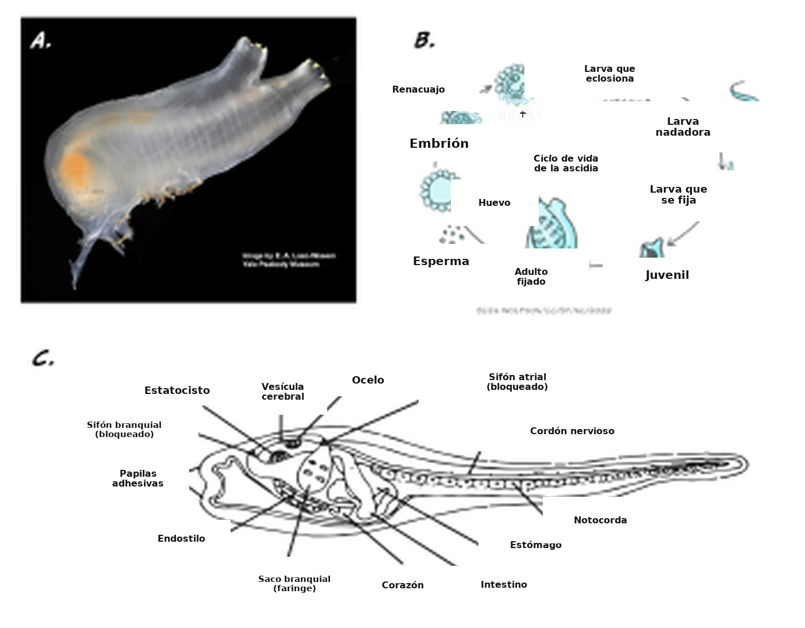
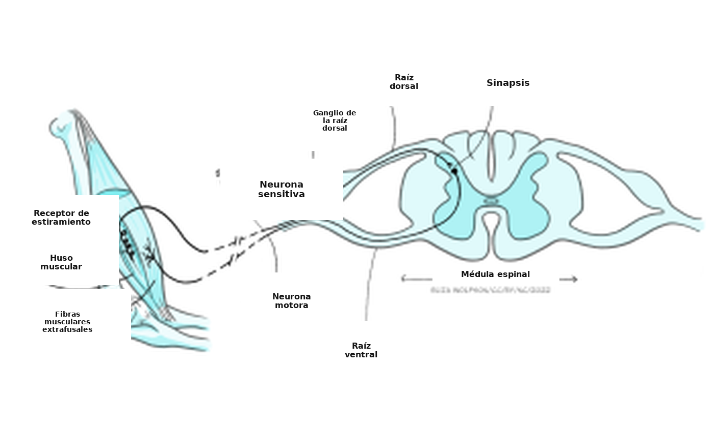
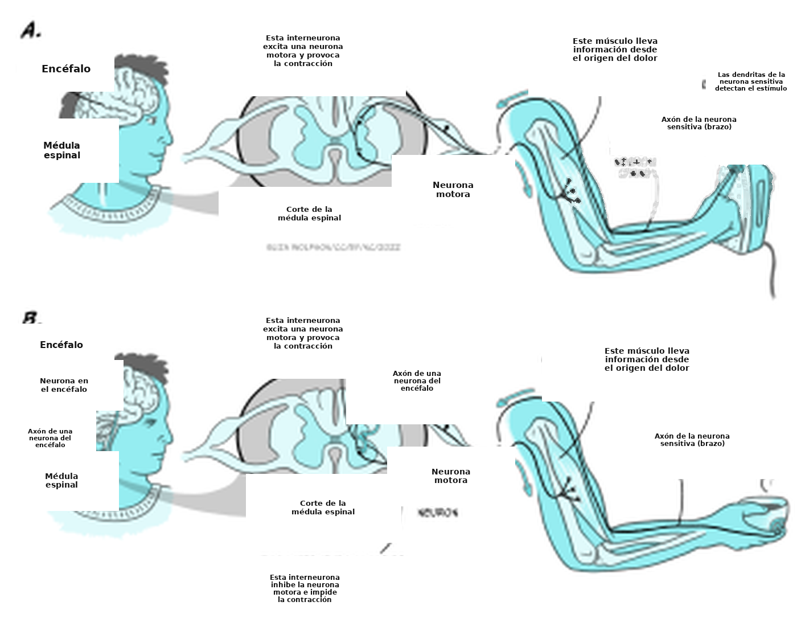
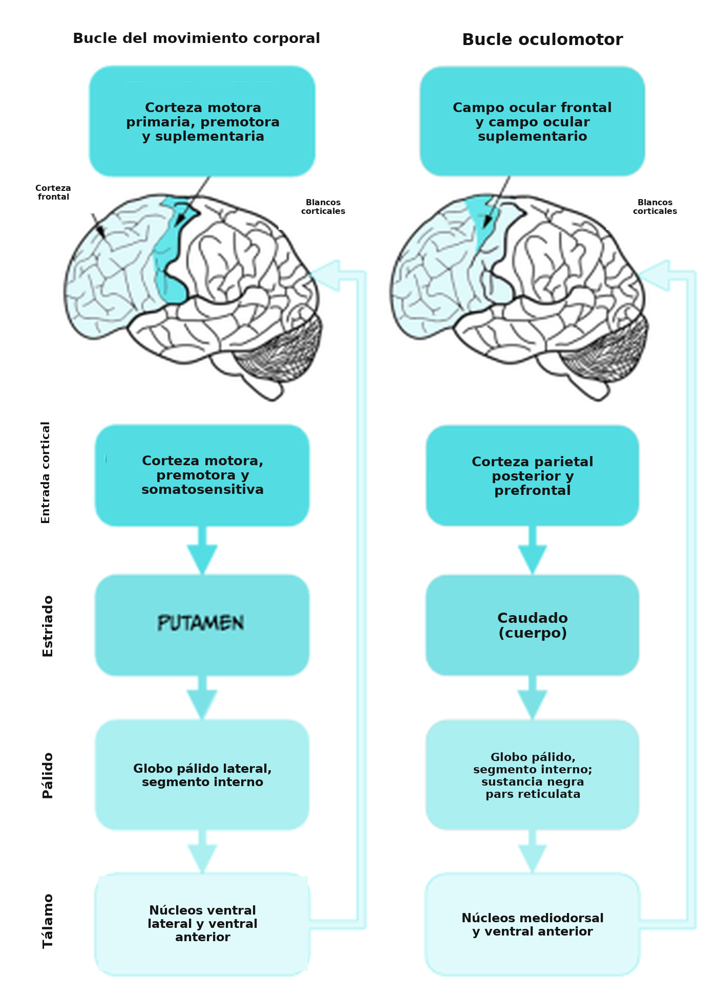
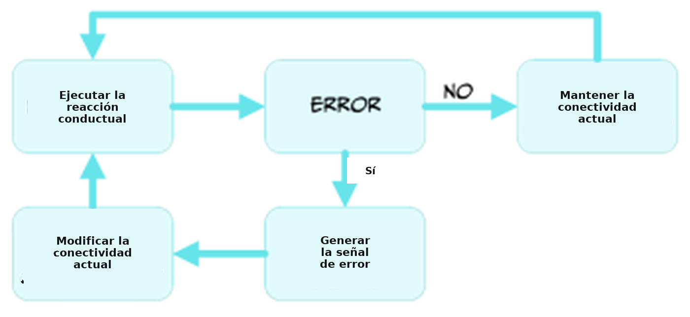

Integración sensitivomotora
Objetivos de aprendizaje
Al terminar este capítulo, vas a poder comprender:
- los distintos niveles de la integración sensitivomotora;
- la participación de distintos sistemas encefálicos en la preparación, la ejecución y la evaluación de una acción conductual a partir de información sensitiva externa e interna.
Los animales son la única rama de los seres vivos que tiene encéfalo, y casi todos lo tienen. (Nota: hay unas pocas excepciones. Las esponjas son animales simples que sobreviven en el fondo del mar tomando nutrientes por el cuerpo poroso, y no tienen encéfalo ni tejido nervioso de ningún tipo.) Las teorías actuales proponen que una de las principales ventajas de tener encéfalo es permitir que quien lo posee se desplace e interactúe con el entorno. Analicemos un ejemplo ilustrativo: la ascidia, un invertebrado marino con un ciclo de vida muy particular (Figura 5.16).
En su forma juvenil, la ascidia nada en busca de una roca adecuada a la que fijarse. Para eso usa un sistema nervioso central rudimentario, de unas 200 neuronas. Una vez fijada, el animal se vuelve sésil (inmóvil) y se come el encéfalo, una fuente rica de energía. Durante el resto de su vida permanece inmóvil, así que ya no necesita un encéfalo. Este ejemplo fascinante apoya con fuerza la idea de que el encéfalo es necesario para generar una conducta adaptativa, al coordinar la información sensitiva en una acción motora.

En este capítulo vamos a explorar cómo el encéfalo produce una conducta adaptativa al adquirir información del entorno por medio de los sentidos. Vamos a empezar por el mecanismo más simple de integración sensitivomotora, el reflejo monosináptico espinal, y vamos a subir en complejidad hasta explicar la generación de una conducta compleja, como pegarle a una pelota de tenis con una raqueta durante un partido.
En principio, llegar a ser campeón mundial de ajedrez parece una tarea mucho más complicada que avanzar un peón una casilla. La realidad sugiere lo contrario. Después de mucho esfuerzo e inversión, pudimos construir una computadora capaz de ganar de manera consistente partidas de ajedrez a campeones mundiales humanos. Sin embargo, todavía estamos en los comienzos del diseño y la construcción de máquinas que tengan la destreza manual de un niño pequeño al tomar un peón y moverlo con suavidad una casilla hacia adelante. ¿Cómo es posible?
En el ajedrez hay un número finito de reglas y de movimientos posibles, y todos nos son conocidos. Así, programar una computadora con potencia de cálculo suficiente para calcular todas las jugadas posibles y sus resultados durante una partida fue, sencillamente, un desafío técnico: considerable, pero factible. En 1997, una computadora de IBM llamada Deep Blue fue la primera máquina capaz de derrotar al mejor jugador humano de la época, el campeón mundial de ajedrez Gary Kasparov. Fue, sin duda, un logro extraordinario, pero Deep Blue no movía físicamente las piezas: decidía la jugada siguiente a partir del estado actual de la partida. Hacía falta una persona que moviera las piezas siguiendo la instrucción de la computadora.
Los robots que pueden hacer acciones físicas imitando a las personas son mucho más difíciles de construir y de programar que Deep Blue. Construir y programar un brazo robótico que destape una botella de agua y sirva un vaso exige mucho dinero y el trabajo de muchos ingenieros muy capaces. Pero ese mismo brazo no puede hacer otras tareas simples para una persona, como atarse los cordones o romper un huevo para preparar una comida. ¿Por qué ocurre esto?
Probablemente porque quienes diseñan robots todavía no pueden incorporar la mayor parte de las reglas fundamentales que usa el sistema nervioso para coordinar esas tareas, a partir de la integración y el análisis en tiempo real de información sensitiva ruidosa y multidimensional. En las secciones siguientes vamos a repasar lo que se sabe sobre los principios básicos que rigen la integración sensitivomotora, con atención a cómo y dónde el encéfalo computa la información sensitiva para producir salidas conductuales adaptativas y flexibles.
Integración sensitivomotora: la unidad mínima
Una de las estructuras más simples que producen integración sensitivomotora en el ser humano es el reflejo espinal monosináptico (Figura 5.17).

Estos arcos reflejos comprenden una neurona sensitiva, que se origina en un músculo blanco, y una neurona motora, que se origina en la médula espinal y hace contacto sináptico con el mismo músculo. La neurona sensitiva recoge información sobre el estado de estiramiento de las fibras musculares mediante terminales sensitivas sensibles al estiramiento. Cuando el músculo se estira más allá de cierto umbral, la neurona sensitiva se activa y dispara potenciales de acción que viajan hasta su terminal axónica. La neurona sensitiva libera neurotransmisores que activan la neurona motora y esta, a su vez, dispara potenciales de acción que viajan hasta su terminal axónica, situada en el músculo blanco. La activación del axón motor libera el neurotransmisor acetilcolina (ACh) que, por medio de canales receptores de ACh, produce la contracción de la fibra muscular. Este circuito tan simple es un ejemplo de integración sensitivomotora. En este caso, la información sensitiva es bastante simple: la neurona sensitiva se activa o no, según el estiramiento del músculo supere o no el umbral prefijado. El resultado también es de todo o nada: o la neurona motora dispara potenciales de acción y contrae el músculo blanco, o no lo hace. Este sistema tan simple de integración sensitivomotora cumple una función muy específica: evitar el estiramiento excesivo del músculo blanco, que puede dañar de manera permanente las fibras musculares. El resultado conductual también es simple —una contracción muscular para prevenir la lesión—, pero está bien ajustado a su función biológica.
Como dijimos más arriba que la razón de tener encéfalo es producir conductas como nadar o buscar un lugar adecuado para fijarse, puede resultar desconcertante que los reflejos espinales produzcan conductas sin que intervenga el encéfalo. Una explicación de esta aparente discrepancia es la función biológica que cumplen estos reflejos. Eso se ve con claridad en el siguiente experimento casero sobre el reflejo rotuliano en humanos, de Backyard Brains.
Si se aplica un golpe suave en el tendón rotuliano —que conecta el cuádriceps con la tibia— de una persona voluntaria, el cuádriceps de esa misma pierna se contrae en 20 a 30 milisegundos. En cambio, si le pedimos a la persona, con los ojos vendados para que no pueda anticipar el golpe en la rodilla, que contraiga el cuádriceps de la otra pierna cada vez que detecta el golpe suave en esa rodilla, el retraso entre el golpe y la contracción aumenta a unos 200 milisegundos. La contracción de la pierna que recibe el golpe está gobernada por un reflejo espinal, mientras que la contracción de la pierna contralateral la controla la decisión voluntaria de moverla, una decisión que implica la actividad del encéfalo. Dada la función biológica de los reflejos espinales, no pasar por el encéfalo permite una respuesta más rápida y con más posibilidades de preservar la integridad del tejido.
Sin embargo, la mayor parte de las conductas humanas de la vida cotidiana son consecuencia de interacciones complejas entre la información sensitiva, el estado interno y las respuestas posibles. Eso exige la capacidad de cómputo del encéfalo para maximizar los beneficios de la selección de la acción en tiempo real, en un entorno que cambia todo el tiempo.
La conducta en un mundo que cambia todo el tiempo
Veamos la situación siguiente. Imaginá que una mañana estás planchando la ropa antes de ir a una entrevista de trabajo. En un instante de distracción, un dedo toca la plancha caliente e, inmediatamente, retirás la mano y el brazo del contacto con la superficie.
Este ejemplo cotidiano ilustra la función de otro tipo de reflejo espinal, el reflejo polisináptico. En este caso, las neuronas sensitiva y motora características de los reflejos monosinápticos que vimos se complementan con una interneurona que hace de puente sináptico entre ellas (Figura 5.18a).

La función de este reflejo es evitar el daño de la parte del cuerpo afectada, y no recluta ni requiere actividad encefálica.
Pero imaginá ahora que, después de planchar, preparás un café para el desayuno. Al sacar del microondas la taza recién calentada, te das cuenta de que calentaste el café de más y de que la taza está demasiado caliente como para llevarla hasta la mesa. Como en el ejemplo anterior, el reflejo espinal correspondiente se va a activar por el calor para evitar que te lastimes la mano, pero no soltás la taza caliente. En cambio, buscás una superficie cercana donde apoyarla sin derramar el contenido.
Si el encéfalo no interviniera en esta situación, terminarías con una taza de café rota y desparramada por el piso. En cambio, encontraste una solución mejor y salvaste la mano y el café. Este es un ejemplo de integración sensitivomotora en el que la selección de la acción por parte del encéfalo es clave para producir una respuesta conductual adaptativa. El reflejo espinal polisináptico que salvó la mano de la plancha caliente tenía que inhibirse en este caso, y eso fue posible por la activación de interneuronas adicionales que descienden desde el encéfalo (Figura 5.18b).
La intención de tomar ese café, y una predicción plausible de tocar un objeto caliente al buscar la taza dentro del microondas, influyeron en la selección de la acción y anularon el reflejo espinal polisináptico activado por la vía sensitiva. Este ejemplo muestra por qué el encéfalo es esencial para este tipo de selección conductual: puede integrar información sensitiva de distintas fuentes, junto con el estado interno de la persona, para producir una acción más precisa y ventajosa en el momento justo.
Vías neurales y estructuras que intervienen en las acciones voluntarias
Hasta aquí repasamos cómo los reflejos pueden controlar acciones y cómo la integración de varias fuentes de información puede alterar acciones reflejas predeterminadas para producir conductas más adaptativas. Sin embargo, la mayor parte de nuestras acciones y conductas cotidianas se producen de manera voluntaria, sin una participación aparente de reflejos mono o polisinápticos. Movimientos en apariencia triviales, como pegarle a una pelota de tenis con una raqueta, exigen una integración compleja de la percepción sensitiva y del análisis del estado interno, incluida la postura y el estado muscular, además de la selección y la ejecución de la acción. Una tarea tan compleja depende por completo del encéfalo e implica detectar la pelota que se acerca mediante información visual y auditiva, estimar la velocidad de la pelota y la zona del rebote, acercarse a esa zona y preparar el golpe y, por último, golpear la pelota con el centro de la raqueta.
En esta sección vamos a repasar las vías sensitivas y neurales, y las estructuras corporales, necesarias para producir esa acción voluntaria. Muchas de ellas ya aparecieron en capítulos anteriores sobre las vías sensitivas y motoras, pero aquí vamos a ver con más detalle cómo trabajan juntas para generar la conducta. También vamos a comentar algunos de los principios básicos que usa el encéfalo para producir la mejor solución posible del problema —devolver la pelota de tenis al otro lado de la cancha— y cómo las consecuencias de nuestras acciones pueden moldear procesos de integración sensitivomotora más refinados, y así producir mejores acciones.
Seguir la pelota: la audición y la visión en acción
Si alguna vez jugaste un partido de tenis, podés reconocer que hay dos fuentes principales de información cuando intentamos seguir una pelota de tenis que se acerca. Está claro que esta tarea la resuelve sobre todo el sistema visual, pero el sistema auditivo también participa.
Para quienes juegan con más experiencia, el sonido de la pelota golpeada por el rival es una indicación temprana del recorrido aproximado que puede seguir. Si el volumen del sonido es muy bajo o muy alto, es alta la probabilidad de que la pelota no caiga en la zona permitida de nuestro lado de la cancha. Además, la cualidad o la frecuencia del sonido puede indicar si vale la pena seguir la pelota y prepararse para devolverla. En esos casos, incluso podemos decidir que no vale la pena seguirla y nos preparamos para el punto siguiente. Como se comentó en el capítulo Percibir el sonido: el sentido de la audición, tanto el volumen como el tono de un estímulo auditivo se perciben en el oído interno, en la estructura llamada cóclea.
Las células ciliadas internas, distribuidas a lo largo de la membrana basilar, pueden detectar frecuencias sonoras específicas y codificar la intensidad de esas frecuencias mediante su tasa de disparo de potenciales de acción. La información auditiva se traduce al lenguaje del sistema nervioso —los potenciales de acción— y llega al encéfalo por el nervio auditivo. A partir de la experiencia previa, el encéfalo puede determinar cuándo el volumen y el tono del sonido de la pelota golpeada por el rival se asocian con más probabilidad a una pelota que no va a caer en la zona blanco de la cancha. En esos casos, la orden motora que activa el encéfalo será prepararse para el punto siguiente, y no seguir y golpear la pelota. Pero, si el sonido es aproximadamente el esperado, entran en juego el sistema visual y un mecanismo de integración sensitivomotora más complejo.
El ojo se encarga de traducir la información visual en potenciales de acción. La pelota de tenis en movimiento, que viaja a velocidad hacia nuestro lado de la cancha, constituye un objeto en aproximación que ocupa de a poco más superficie en la retina. Los dos ojos van a detectar la pelota, y la información visual se va a integrar en el encéfalo para estimar no solo la dirección de la pelota, sino también su velocidad. A medida que la pelota se acerca al lado cercano de la cancha, los ojos se van a mover para mantener el objeto enfocado dentro de la fóvea. Mantener la imagen de la pelota dentro de la fóvea le da a quien juega la mejor resolución visual con luz de día, y así se maximiza la capacidad de detectar la pelota mientras viaja en un entorno luminoso. Los fotones que rebotan en la pelota de tenis y llegan a la fóvea excitan un conjunto de fotorreceptores. Estas células especializadas traducen la información visual en información eléctrica mediante la activación del fotopigmento y de canales iónicos específicos. Los cambios en el potencial de membrana del fotorreceptor llevan a la activación de las células bipolares y ganglionares, que llevan la información visual, ya convertida en potenciales de acción, hasta el encéfalo.
La información visual que llega al encéfalo cumple funciones distintas en distintas salidas motoras durante la selección y la ejecución de la acción. El procesamiento visual temprano hace falta para seguir la pelota en movimiento. La investigación empírica determinó cuáles son las vías neurales que intervienen en el seguimiento de objetos, y cómo se usa esa información para producir órdenes motoras del movimiento ocular. Los movimientos oculares rápidos, llamados movimientos sacádicos, se usan para seguir la pelota y adquirir información sobre el entorno. Esto es particularmente importante cuando empezamos a acercarnos a la zona donde la pelota puede rebotar, porque no solo hay que seguirla con la vista, sino también movernos por la cancha de manera segura y eficaz.
En el laboratorio, la atención visual de voluntarios sanos puede seguirse registrando la posición de los ojos en tiempo real. Con la electroencefalografía (EEG), o con técnicas de neuroimagen, combinadas con el seguimiento ocular, se aprendió que los movimientos sacádicos están controlados sobre todo por el bucle oculomotor, que incluye la corteza cerebral, los núcleos basales (ganglios basales) y el tálamo (Figura 5.19).

Las neuronas de la corteza parietal posterior, una región asociativa que recibe información visual y motora, aumentan su tasa de disparo justo antes de que se observe un movimiento sacádico. Las lesiones de esta región destruyen la capacidad de realizar movimientos sacádicos y producen, en humanos, una afección llamada «negligencia espacial», caracterizada por un déficit atencional en el campo visual contralateral al hemisferio encefálico lesionado.
La corteza parietal posterior envía conexiones a varios de los núcleos basales que controlan los movimientos oculares. Uno de esos núcleos, el colículo superior, contiene neuronas de fijación visual. Estas células se activan inmediatamente después de un movimiento sacádico y siguen disparando durante la fijación ocular, lo que inhibe el movimiento del ojo fuera de la ubicación blanco.
Así, la acción concertada de varias regiones encefálicas clave es la responsable de seguir la pelota de tenis que se acerca a nuestro lado de la cancha. Esa información es valiosa, pero limitarse a seguir una pelota de tenis en movimiento no significa que vayamos a poder devolverla con una raqueta. ¿Cómo podemos usar esta información para preparar la acción de devolver la pelota al otro lado?
En la sección siguiente vamos a analizar cómo se integran las distintas corrientes de información sensitiva para coordinar esta acción.
Integración de la información visual: recorrer la cancha hacia la pelota
La información visual que transporta el nervio óptico sigue vías paralelas para el análisis de distintos atributos de la experiencia visual. Se distinguen dos vías principales según participe o no la corteza visual primaria (V1).
- En la vía geniculoestriada, la información visual del nervio óptico llega al núcleo geniculado lateral del tálamo y después sigue hacia la corteza visual primaria (V1).
La vía geniculoestriada divide la información visual en la vía dorsal y la vía ventral. En nuestro ejemplo, la vía dorsal se encarga de percibir el movimiento de la pelota y la relación espacial entre la pelota y quien juega (la llamada información del cómo). La vía ventral se encarga de determinar el contraste, el contorno y el color de la pelota de tenis (la llamada información del qué).
- En la vía tectopulvinar, la información visual que transporta el nervio óptico se releva hacia el colículo superior, una región del mesencéfalo, y después sigue hacia el núcleo pulvinar del tálamo.
La vía tectopulvinar determina la localización espacial de los objetos del entorno y nos permite desplazarnos sin chocar con objetos estacionarios. Esta vía visual es independiente de V1 y permite recorrer la cancha de tenis con eficacia, evitando pisar pelotas quietas u otros objetos potencialmente peligrosos.
Como es habitual en la investigación en neurociencia, el análisis de las lesiones encefálicas y de sus consecuencias es clave para entender el funcionamiento del encéfalo. Algunas personas que sufren un accidente cerebrovascular (ACV) que afecta la corteza visual primaria (V1) son, técnicamente, ciegas. No superan ninguna prueba de detección de objetos ni de reconocimiento de otras personas y de lugares. Esto se debe a la interrupción de la vía geniculoestriada, que analiza el cómo y el qué de la experiencia visual y sostiene la experiencia consciente de ver.
Sin embargo, estas personas pueden resolver una prueba de navegación visual (mirá un ejemplo en video de una prueba de navegación visual). Si se las deja solas para caminar por un pasillo con distintos objetos desparramados en el camino, logran recorrerlo por su cuenta sin tropezar, aunque no tengan una percepción visual consciente. Esta afección se conoce como visión ciega (véase también el recuadro 9, Iluminar el mundo: el sentido de la visión), y la observación conductual notable se explica por el funcionamiento de la vía tectopulvinar, que no usa V1 para determinar la posición de los objetos en el entorno. Esta observación fascinante es un buen ejemplo de cómo la investigación neurocientífica revela el funcionamiento del encéfalo al analizar el efecto de lesiones focales en distintas regiones.
Pero volvamos a la pelota de tenis en movimiento y a cómo el encéfalo usa esta información para producir una acción.
Con toda la información visual que fluye por las distintas vías, junto con la información interoceptiva sobre nuestro estado interno y la posición de las piernas y los brazos, el encéfalo hace una integración continua y selecciona la acción adecuada para el momento adecuado. Las reglas que sigue para tomar esas decisiones son, hoy, un foco intenso de la investigación en neurociencia básica. Una hipótesis es que el encéfalo produce de manera constante un análisis bayesiano del mundo a partir de la información sensitiva (Körding, 2007): usa la experiencia previa, modulada por la información en curso, para calcular el resultado más probable. El encéfalo posee información previa sobre dónde es probable que rebote la pelota, generada por la experiencia anterior de jugar. Por ejemplo, quienes juegan muy bien al tenis buscan que la pelota rebote cerca de las líneas de la cancha, lo que dificulta que el rival la devuelva. Esa información previa —la probabilidad de que la pelota rebote cerca de la línea— se combina con la información sensitiva en vivo de dónde estimamos que va a rebotar. Así, nuestra estimación de la probabilidad real de que la pelota rebote en un lugar determinado de nuestro lado de la cancha es el producto de superponer la información previa con la información presente. El encéfalo produce, entonces, una predicción de dónde es probable que rebote la pelota, y nos acercamos a esa posición para preparar la acción. A medida que la pelota se acerca al piso, la predicción basada en la información sensitiva se vuelve más precisa, y también la selección de la acción conductual adecuada para ese conjunto de condiciones.
¡Acción!
Ahora que el encéfalo integró la información sensitiva disponible y predijo dónde va a tocar el piso la pelota, es el momento de ejecutar la orden motora de golpearla después del rebote. La ejecución y el control de las secuencias motoras voluntarias los realizan bucles motores que incluyen distintas regiones de la corteza cerebral y de los núcleos basales.
En nuestro ejemplo, los dos bucles motores principales son el oculomotor y el del movimiento corporal (véase la Figura 5.19, más arriba).
Como mencionamos en la sección Seguir la pelota, el bucle oculomotor recibe información sensitiva e interoceptiva para controlar el movimiento ocular necesario para seguir la pelota en movimiento. El bucle del movimiento corporal controla los cientos de músculos necesarios para realizar acciones, e incluye una conexión en serie de las cortezas motora, premotora y somatosensitiva con áreas de los núcleos basales y del tálamo. El tálamo envía conexiones de retroalimentación hacia las regiones tempranas de la corteza. Este circuito neuronal es clave para vigilar de manera constante la acción en curso y permite modificar las acciones mientras se ejecutan. El estriado y el globo pálido, dentro de los núcleos basales, son importantes para la selección, el inicio y la finalización de las acciones motoras —como se vio en el ejemplo de los movimientos sacádicos de los ojos— y para relacionar las acciones con sus consecuencias. Según quienes enseñan tenis, golpear bien una pelota de tenis exige una coordinación refinada entre la posición de la pelota y el movimiento de la raqueta. Para lograrlo, es importante seguir la pelota con los ojos en todo momento, incluso al golpearla. Para eso tiene que intervenir el cerebelo (Miall et al., 2001). Esta región encefálica se activa durante tareas que exigen una alta coordinación entre el seguimiento ocular y los movimientos de la mano.
Además, la ejecución de cualquiera de los movimientos mencionados hasta aquí, así como la acción de golpear la pelota, requiere la activación de los mapas del homúnculo motor de la corteza motora. Todas las regiones que controlan el movimiento de los miembros y de los músculos que participan son reclutadas por la orden motora durante todo el ejercicio.
Por último, la activación de las neuronas motoras por estas órdenes motoras produce el disparo de potenciales de acción que viajan hasta las terminales axónicas. Como vimos en el capítulo anterior, el contacto sináptico entre los axones de las neuronas motoras y las fibras musculares es un tipo específico de sinapsis llamado unión neuromuscular. Cuando el axón se activa por la llegada de uno o más potenciales de acción, aumenta la concentración interna del ion Ca2+ y, con ella, la probabilidad de liberación de vesículas sinápticas que contienen el neurotransmisor acetilcolina. La liberación de ACh en la hendidura sináptica activa canales receptores de ACh expresados en la membrana de la fibra muscular, lo que impulsa la despolarización de la membrana celular y la contracción de las fibras musculares.
La contracción coordinada de músculos y de grupos musculares específicos es el resultado de un sistema complejo de integración y coordinación sensitivomotora. Incluso después de ejecutada la acción, los sentidos y el encéfalo siguen vigilando el entorno y analizando sus consecuencias.
Resultado conductual y error de predicción
Hayamos logrado o no golpear la pelota, y según el resultado de esa acción, el encéfalo integra esta información por medio del sistema de recompensa, que depende del neurotransmisor dopamina (Figura 5.20).

Cuando el resultado coincide con nuestras expectativas, no hay señal de error. El encéfalo tiene mecanismos para mantener las relaciones neurales responsables de esa conducta como respuesta adaptativa ante situaciones similares. Si el resultado difiere de lo esperado —porque erramos la pelota por completo, porque pegó en la red o porque se fue volando más allá de la línea de fondo—, se genera una señal de error de predicción en varias regiones del encéfalo, por la liberación de dopamina (Schultz, 2000). Esa señal dopaminérgica afecta el modo en que distintas regiones del encéfalo se conectan entre sí, y así permite modificar la acción de acercarse a la pelota de tenis o de golpearla en encuentros futuros. El sistema de recompensa y la predicción de resultados específicos permiten que el mecanismo de integración sensitivomotora aprenda de su propio desempeño y mejore las acciones.
Ideas clave
- Los sistemas sensitivomotores evolucionaron en los animales para generar respuestas conductuales adaptativas ante estímulos ambientales e internos.
- Una acción simple con una pelota de tenis durante un partido exige la actividad coordinada de una gran cantidad de sistemas encefálicos.
- La información sensitiva, relevada en tiempo real al encéfalo, es clave para seleccionar las acciones motoras más apropiadas para el desempeño de la tarea.
- La memoria, como conocimiento previo, también es clave para la selección de la acción motora.
- Producir una acción implica varios bucles corteza–núcleos basales (oculomotor y esqueletomotor), además del cerebelo.
- El sistema dopaminérgico suele ser clave para coordinar el mantenimiento o la modificación de las acciones motoras.
Referencias
Körding, K. (2007). Decision theory: What ‘should’ the nervous system do? Science 318(5850), 606–10. https://doi.org/10.1126/science.1142998
Miall, R. C., Reckess, G. Z., & Imamizu, H. (2001). The cerebellum coordinates eye and hand tracking movements. Nature Neuroscience 4(6), 638–44. https://doi.org/10.1038/88465
Schultz, W. (2000). Multiple reward signals in the brain. Nature Reviews Neuroscience 1(3), 199–207. https://doi.org/10.1038/35044563
La zona de la retina con la mayor densidad de conos (los fotorreceptores sensibles a la luz de color).
Un método de inferencia estadística que actualiza las predicciones a partir de la experiencia previa y del muestreo continuo de información, para predecir un resultado o una situación.